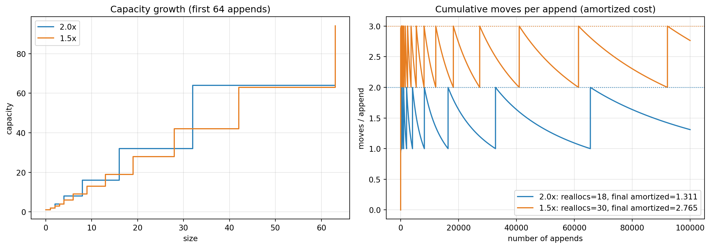

flowchart TD
A["C++20"] --> B["Core Language"]
A --> C["Library"]
A --> D["Concurrency"]
A --> E["The Big Four"]
E --> F["Concepts<br/>constrain templates"]
E --> G["Ranges<br/>composable views"]
E --> H["Coroutines<br/>suspend and resume"]
E --> I["Modules<br/>replace #include"]
B --> J["<=> · consteval · constinit · attributes"]
C --> K["format · span · calendar · constexpr containers"]
D --> L["jthread · atomic_ref · semaphores · barriers"]
Modern C++: The C++20 Big Four, STL Under the Hood, Smart Pointers, and Reinventing the Wheel
Concepts, Ranges, Coroutines, and Modules; the Tour of C++ essentials from Parameterized Types to Concurrency; how std::vector and smart pointers actually work beneath the abstraction; and how to write your own efficient Vector, UniquePtr, and SharedPtr — with a compiled, benchmarked laboratory
Computer Science
C++
C++20
STL
Templates
Smart Pointers
Concurrency
Systems Programming
Performance
A deep, practical tour of modern C++: the C++20 ‘Big Four’ features (Concepts, the Ranges library, Coroutines, and Modules), the wider core-language/library/concurrency additions, the key ideas from A Tour of C++ (parameterized types, generic programming, string_view, ranges, span, function adaptation, type functions, program exit, and concurrency), a mental model of the STL, how std::unique_ptr and std::shared_ptr really work, how std::vector grows under the hood, and complete, sanitizer-clean reimplementations of std::vector, unique ownership, and reference-counted shared ownership, plus an executable laboratory that benchmarks reserve performance and simulates amortized growth.
“C makes it easy to shoot yourself in the foot; C++ makes it harder, but when you do, it blows your whole leg off.” — Bjarne Stroustrup
C++20 is the largest change to the language since C++11. It adds four headline features — Concepts, Ranges, Coroutines, and Modules — that together let you write generic code that is safer, faster to compile, and dramatically more expressive. This essay connects those features to the day-to-day meaning of the STL, and then does something most tutorials skip: it opens the standard library up and rebuilds the core containers and smart pointers from scratch, so you understand the mechanics rather than memorizing the API.
TipCompanion Reading
1 Why C++20 Is a Language Change, Not a Version Bump
C++ releases on a three-year cadence, but the label “20” hides a qualitative shift. C++11 modernized the language (move semantics, lambdas, auto, smart pointers). C++14 and C++17 polished it (generic lambdas, if constexpr, structured bindings, std::optional, std::variant, parallel algorithms). C++20 changed how you express constraints and pipelines. Constraints become part of the type system, loops become composable views, asynchronous control flow becomes first-class, and translation units become reusable modules.
For a working engineer the practical questions are:
- Which features change how I design interfaces? Concepts and Modules.
- Which features change how I write algorithms? Ranges and Coroutines.
- What must I still understand for performance? Containers, allocation, ownership, and move semantics — the “under the hood” material.
This essay answers all three, and ends by rebuilding the wheels so the abstractions stop being magic.
2 The C++20 Landscape: Three Pillars
The standard organizes the release into Core Language, Library, and Concurrency. The features you will actually reach for are spread across all three.
| Pillar | Headline additions |
|---|---|
| Core Language | Three-way comparison <=>, string literals as template parameters, constexpr virtual functions, volatile redefinition, designated initializers, lambda improvements, new standard attributes, consteval / constinit, std::source_location |
| Library | Calendar and time-zone support, std::span, constexpr std::string and std::vector, std::format |
| Concurrency | std::atomic_ref<T>, std::atomic<std::shared_ptr<T>>, floating-point atomics, waiting on atomics, semaphores / latches / barriers, std::jthread |
And, overlaying the whole release, the four features that anchor it:
3 The Big Four
3.1 Concepts
Before C++20, a function template was an unconstrained promise: correctness was discovered only when instantiation eventually failed, producing error messages measured in pages. Concepts move those requirements into the type system, where they are checked, documented, and (crucially) used for overloading.
A concept is a named, compile-time predicate over types:
#include <concepts>
template <typename T>
concept Addable = requires(T a, T b) {
{ a + b } -> std::convertible_to<T>;
};
template <Addable T>
T sum(const std::vector<T>& v) {
T acc{};
for (const auto& x : v) acc = acc + x;
return acc;
}Three things happened at once:
- The interface documents itself.
Addableis readable to humans and compiler-enforced. - Errors are localized. Passing a non-addable type fails at the call site with “constraints not satisfied,” not deep inside the function body.
- Overload resolution can use concepts. More-constrained overloads are preferred, enabling “pretty” error messages via a catch-all
requiresclause.
The abbreviated syntax is the ergonomic everyday form:
void show(Addable auto x); // equivalent to: template <Addable T> void show(T x);requires expressions support four kinds of requirements: simple (a + b;), type (typename T::value_type;), compound ({ expr } -> Concept;), and nested (requires Concept<T>;). Concepts compose and subsume: if RandomAccessIterator is defined to refine BidirectionalIterator, a call with a random-access iterator picks the more specific overload automatically. This subsumption lattice is the mechanism behind the range algorithm overloads (std::ranges::distance uses it to pick O(1) random-access or O(n) forward behavior).
3.2 Ranges
The Ranges library is the STL reimagined as composable pipelines over sequences. It supplies three interlocking pieces: finer-grained iterator concepts, improved algorithms under std::ranges, and views — lazy, non-owning transformations you can chain with |.
#include <ranges>
#include <algorithm>
#include <format>
struct Employee { std::string name; int age; double salary; };
std::vector<Employee> staff{ /* ... */ };
auto top = staff
| std::views::filter([](const Employee& e){ return e.salary > 90000; })
| std::views::transform(&Employee::name)
| std::views::take(2);
for (const auto& n : top) std::cout << std::format("{} ", n);The key mental shift: views do not copy and do not execute until you iterate. The pipeline above builds a lightweight view object; the filter and transform run once per element during the loop, with no intermediate containers. This is the same idea as Rust iterators or Unix pipes, now in the type system.
Useful view adaptors include filter, transform, take, drop, take_while, drop_while, reverse, join, split, elements, keys, values, and the generator iota. The algorithms — sort, find, count, fold_left (C++23), etc. — gained projections, a final argument that selects the field to compare, which eliminates most comparator lambdas:
std::ranges::sort(staff, {}, &Employee::salary); // sort by salary, ascending3.3 Coroutines
C++20 made coroutines a language feature: a function that can suspend and resume while preserving its locals and control state. They underpin generators, async tasks, and efficient state machines. The three keywords are co_await, co_yield, and co_return.
std::generator<int> fib() { // C++23 std::generator; C++20 needs a library coroutine type
int a = 0, b = 1;
while (true) {
co_yield a;
std::tie(a, b) = std::pair{b, a + b};
}
}A coroutine is a specialization contract: the compiler rewrites the function to allocate a coroutine frame and interact with a promise type that defines initial_suspend, final_suspend, get_return_object, yield_value, and unhandled_exception. Libraries (cppcoro, libunifex, Asio, std::generator) provide ready-made promise types so you rarely write them by hand.
The crucial distinction: coroutines are not threads. They are cooperatively scheduled tasks that suspend at explicit points. You can run thousands of them on a single thread, with no data races and no context-switch cost to the OS. co_await is the suspension point; a scheduler (often a thread plus an event loop) decides what runs next.
3.4 Modules
Headers are textual inclusion, and the preprocessor is why C++ compiles slowly. Modules replace textual inclusion with compiled interfaces:
// mathmod.cppm
export module mathmod;
export namespace math {
constexpr long long factorial(int n) {
long long r = 1;
for (int i = 2; i <= n; ++i) r *= i;
return r;
}
template <typename T>
T clamp(T v, T lo, T hi) { return v < lo ? lo : (v > hi ? hi : v); }
}// main.cpp
import mathmod;
#include <iostream>
#include <format>
int main() {
std::cout << std::format("{} {}\n", math::factorial(6), math::clamp(15, 0, 10));
}Modules deliver four wins: isolation (no macro leakage or accidental name collisions), order independence, faster builds (interfaces are parsed once), and explicit control of exports. With GCC you compile with -fmodules-ts; MSVC uses /std:c++20 /interface; Clang uses -fmodules and -std=c++20. The standardized import std; (the standard library as a module) is arriving across toolchains and eliminates most #include lines.
| Property | Header #include |
Module import |
|---|---|---|
| Inclusion model | textual copy | compiled interface |
| Macros leak | yes | no |
| Include order matters | yes | no |
| Build cost | repeated parsing | parsed once |
| Interface/implementation | convention | language-enforced (export) |
| Toolchain maturity | universal | good, improving |
4 Key Concepts from A Tour of C++
A Tour of C++ is the shortest path from experienced programmer to idiomatic modern C++. The following sections map directly to the ideas that reward careful study.
4.1 Modules (§3.2.2)
Stroustrup presents modules as the replacement for the #include/header-guard/extern machinery. The mental model: a module is a named unit with an explicit export surface. export module name; opens it, export marks what consumers can see, and everything else is private. Module partitions (module foo:bar;) let you split a large interface across files without exposing the seams. The practical rule from the book: prefer modules for new code, keep headers for interoperability, and never mix #include of a header that is also imported as a module.
4.2 Parameterized Types (§7.2)
Templates are compile-time code generation with types as parameters. A class template fixes the interface while leaving types and policies flexible:
template <typename T, typename Allocator = std::allocator<T>>
class Buffer { /* ... */ };The book emphasizes three points that separate novice from expert template use:
- Prefer
typenameconstraints (concepts) over unstructured templates — this is the bridge to Chapter 8. - Value parameters and template-template parameters exist too:
template <typename T, int N> struct Array;is a parameterized fixed-size type, andtemplate <template <typename> class C> ...parameterizes over containers. - Template argument deduction and
autoare the same mechanism; CTAD lets you writestd::pair p{1, 2.0};.
4.3 Concepts and Generic Programming (Chapter 8)
This is the theoretical core of the book. Generic programming means writing algorithms against properties, not types. Stroustrup’s sequence: start from a concrete algorithm, abstract it over a concept, verify the concept is minimal but sufficient, and document it as an interface. Concepts turn the informal “this template requires a random-access sequence” into a checkable contract, and they enable overloading and specialization on capability. The payoff is the one this essay keeps returning to: generic code that is as fast as hand-written code, because the abstractions are resolved entirely at compile time.
4.4 String Views (§10.3)
std::string_view is a non-owning (pointer, length) pair over a contiguous character buffer. It is the function-parameter type of choice for read-only strings because it accepts std::string, const char*, and literals without constructing or copying.
void log(std::string_view msg); // accepts everything, allocates nothingThe danger is lifetime: a string_view never owns its data, so it must not outlive the buffer it points to. Returning a string_view into a local std::string is a dangling reference. Treat string_view as a parameter type, rarely as a member.
4.5 Ranges (Chapter 14)
Chapter 14 formalizes what the Ranges library provides. The vocabulary: a range is anything with begin()/end(); a view is a range with cheap copy/move that does not own its elements; a range adaptor composes views; and the projection argument selects a comparison key. Stroustrup stresses that ranges make algorithms safer (no mismatched iterator pairs) and more composable (pipelines instead of temporary loops), while preserving the STL’s complexity guarantees.
4.6 Span (§15.2.2)
std::span<T> is the missing “view over a contiguous sequence” for arrays, std::vector, and std::array alike. It is a non-owning (pointer, size) pair — the container equivalent of string_view — and it is the right parameter type for functions that read or write a contiguous block without caring whether the caller used a vector or a C array.
void scale(std::span<double> xs, double factor) {
for (double& x : xs) x *= factor;
}Use std::span<const T> for read-only access. As with string_view, never store a span beyond the lifetime of the underlying storage.
4.7 Function Adaptation (§16.3)
The standard library can adapt callables into other callables: std::bind_front/std::bind (partial application), std::mem_fn (member-function pointer to callable), std::not_fn (logical negation), std::reference_wrapper (pass by reference through interfaces that copy), and std::function (type-erased owning callable). Modern guidance is blunt: prefer lambdas to std::bind. Lambdas are clearer, inline better, and avoid surprising argument-forwarding rules. Reach for std::function only when you need type erasure at an API boundary; it costs an allocation and defeats inlining.
4.8 Type Functions (§16.4)
A type function computes a type or value from a type at compile time. The library provides the vocabulary in <type_traits>: std::remove_reference, std::conditional, std::enable_if, std::declval, std::is_convertible, std::underlying_type, and the variable templates like std::is_integral_v. The book’s key idiom is if constexpr, which branches at compile time so that the untaken branch is not even instantiated:
template <typename T>
void destroy_slot(T* slot) {
if constexpr (std::is_trivially_destructible_v<T>) {
/* nothing to do */
} else {
slot->~T();
}
}This is exactly the machinery our hand-written Vector will use to reallocate optimally.
4.9 Exiting a Program (§16.8)
Stroustrup’s treatment of program termination is short but precise, and it matters for resource management:
- Return from
main— the normal path; locals are destroyed, thenstaticobjects, then a status is reported. std::exit(code)— runsatexithandlers and destroysstaticobjects, but does not unwind the stack, so automatic (local) objects are not destroyed. Calling it mid-function can leak resources.std::quick_exit— runsat_quick_exithandlers only; skipsstaticdestruction. Fast, blunt.std::abort— immediate abnormal termination; no destructors, no flushing, often triggers a core dump.- Thrown exceptions from
main— if uncaught,std::terminateis called (which by default callsstd::abort).
The engineering rule: let main return. Rely on RAII destructors for cleanup, and reserve exit/abort for genuinely abnormal situations.
4.10 Concurrency (Chapter 18)
The book frames concurrency around three primitives: tasks (std::thread, std::jthread, std::async), synchronization (std::mutex, std::condition_variable, std::atomic), and communication (std::future, std::promise). C++20 adds the pieces practitioners had been hand-rolling:
std::jthread— a joining thread that also carries astd::stop_token. When thejthreadis destroyed it automatically joins, and you can cooperatively cancel viarequest_stop().std::atomic_ref<T>— atomic operations on an ordinary non-atomic object, so you can apply atomics to existing data without changing its type.std::atomic<std::shared_ptr<T>>— thread-safe load/store of the pointer itself (not of the pointee), enabling lock-free publication of shared configuration.- Semaphores, latches, and barriers —
std::counting_semaphore,std::binary_semaphore,std::latch(single-use countdown), andstd::barrier(reusable rendezvous). - Waiting on atomics —
std::atomic<T>::wait/notify_one/notify_allgive you a native, allocation-free ready/blocked protocol.
std::jthread worker([](std::stop_token st){
while (!st.stop_requested()) { /* do work */ }
}); // joins automatically on scope exit
worker.request_stop();Stroustrup’s warning is worth repeating: concurrency’s hard problem is not creating threads but sharing data. Prefer message passing (future/promise, queues) over shared mutable state, and when sharing is unavoidable, make ownership and synchronization explicit in the types.
5 STL Constructs: A Mental Model
“The STL” is really four cooperating families: iterators, containers, algorithms, and function objects — glued by concepts. C++20’s range concepts make the glue explicit.
| Family | Role | Examples |
|---|---|---|
| Sequence containers | order, contiguity, index | vector, array, deque, list, forward_list |
| Associative containers | sorted lookup | map, set, multimap, multiset |
| Unordered containers | hashed lookup | unordered_map, unordered_set |
| Container adaptors | restricted interfaces | stack, queue, priority_queue |
| Views | lazy, non-owning | span, string_view, ranges views |
| Smart pointers | ownership | unique_ptr, shared_ptr, weak_ptr |
| Algorithms | operations over ranges | sort, find, transform, accumulate |
Container selection, in one paragraph: choose vector by default (contiguous, cache-friendly, amortized O(1) append); deque when you need fast push/pop at both ends; list/forward_list only when stable iterators and O(1) splicing matter and cache locality does not; map/set (red-black trees) for ordered iteration and range queries; unordered_* (hash tables) for average O(1) lookup without order. The dominant performance variable on modern hardware is memory locality, which is why vector outperforms list even for operations where the textbook complexity favors the list.
Iterators come in five categories (input, forward, bidirectional, random-access, contiguous in C++20), and algorithms are typically defined on the weakest category they can accept. This is generic programming in action.
6 Smart Pointers: Ownership as a Type
Manual new/delete fails because ownership is invisible. Smart pointers make ownership part of the type, so lifetime is managed by scope (RAII) rather than by hope.
6.1 std::unique_ptr — Exclusive Ownership
unique_ptr<T> owns a single object, cannot be copied, and can be moved. It is zero-overhead: the same size as a raw pointer, with no reference counting.
auto p = std::make_unique<Widget>(args);
auto q = std::move(p); // ownership transferred; p is now nullUse std::make_unique rather than new (exception-safe, no repetition of the type). unique_ptr supports custom deleters as a second template parameter: std::unique_ptr<FILE, decltype(&fclose)>. Prefer unique_ptr as the default owning pointer; convert to shared_ptr only when ownership genuinely must be shared.
6.3 std::weak_ptr — Non-Owning Observation
weak_ptr observes a shared_ptr’s object without affecting its lifetime, breaking reference cycles. Call lock() to obtain a temporary shared_ptr if the object is still alive; otherwise you get an empty pointer.
std::weak_ptr<Node> parent;
if (auto p = parent.lock()) { /* alive */ }6.5 When Not to Use Smart Pointers
- Do not use
shared_ptras a default. Sharing ownership is a design decision, not a convenience. Preferunique_ptr, and pass raw pointers or references to non-owning code. - Do not allocate single objects on the heap just to have a pointer. Prefer values; place them on the stack.
- Do not pass
unique_ptrby value unless transferring ownership; pass by reference or.get(). - Watch for cycles between
shared_ptrs — break them withweak_ptr.
7 How std::vector Works Under the Hood
std::vector is a dynamically sized contiguous array. That single sentence implies almost everything:
- Elements are stored back-to-back, so iteration is cache-friendly and pointer arithmetic is valid.
- The container tracks size (live elements) and capacity (allocated slots).
- Appending beyond capacity forces a reallocation: allocate a bigger block, move/copy the elements, destroy the old ones, free the old block.
7.1 Growth and Amortized O(1) Append
When a reallocation is needed, the new capacity is a multiple of the old (libstdc++ and libc++ use 2×; MSVC uses ~1.5×). The exact factor rarely matters for correctness, but it determines the amortized cost. With doubling, after \(n\) appends the total number of elements moved by reallocations is
\[ 1 + 2 + 4 + \cdots + 2^{k-1} = 2^{k} - 1 < 2n, \]
so the average work per append is less than 2 element moves — constant, even though individual appends can be expensive. This is the amortized \(O(1)\) guarantee. (Shrinking growth to 1.5× lowers peak memory overhead and makes it easier to reuse freed blocks, at the cost of slightly more reallocations.)
7.2 Iterator and Reference Invalidation
Reallocation moves elements, so all iterators, pointers, and references into the vector are invalidated by any append that reallocates. This is the single most common source of C++ bugs:
std::vector<int> v{1,2,3};
auto it = v.begin();
v.push_back(4); // may reallocate — 'it' is now dangling
*it = 99; // undefined behaviorreserve(n) allocates up front and eliminates reallocation for the first \(n\) appends, simultaneously fixing performance and iterator-stability surprises. shrink_to_fit() is a non-binding request to reduce capacity.
7.3 push_back vs emplace_back
push_back takes an already-constructed object (copy or move). emplace_back forwards constructor arguments and constructs the element in place, avoiding a temporary:
v.push_back(Widget{1, 2}); // construct temporary, then move
v.emplace_back(1, 2); // construct directly in the slot7.4 Move Semantics, noexcept, and the Strong Guarantee
During reallocation, the vector must transfer existing elements. If the element’s move constructor is noexcept, it moves; if moving could throw and a copy constructor exists, it copies instead, because copying can provide the strong exception guarantee (either the reallocation fully succeeds or the original is untouched). Marking move constructors noexcept is therefore not cosmetic — it directly changes which path the container takes. This is the std::move_if_noexcept policy, and we will implement it ourselves.
7.5 Allocators and Small-Buffer Optimization
The allocator is a template parameter that abstracts raw memory acquisition. Custom allocators (pools, arenas, std::pmr) matter in latency-sensitive systems. Some libraries offer small-buffer-optimized vectors (e.g., LLVM’s SmallVector, Boost’s small_vector) that store a fixed number of elements inline and only spill to the heap beyond that threshold — a large win for small collections.
8 Reinventing the Wheel: Build Your Own Vector
You should almost never ship a hand-written vector. You should absolutely write one once, because it forces every concept above to become concrete. The implementation below is a complete, RAII-correct, move-aware dynamic array using raw storage and placement new.
#include <cstddef>
#include <memory>
#include <stdexcept>
#include <utility>
#include <initializer_list>
#include <type_traits>
template <typename T>
class Vector {
public:
Vector() = default;
explicit Vector(std::size_t n)
: size_(n), cap_(n), data_(allocate(n)) {
for (std::size_t i = 0; i < size_; ++i) new (data_ + i) T();
}
Vector(std::initializer_list<T> il)
: size_(il.size()), cap_(il.size()), data_(allocate(cap_)) {
std::uninitialized_copy(il.begin(), il.end(), data_);
}
~Vector() { destroy(); deallocate(data_); }
Vector(const Vector& o)
: size_(o.size_), cap_(o.size_), data_(allocate(cap_)) {
std::uninitialized_copy(o.data_, o.data_ + o.size_, data_);
}
Vector& operator=(const Vector& o) {
if (this != &o) { Vector tmp(o); swap(tmp); } // copy-and-swap
return *this;
}
Vector(Vector&& o) noexcept
: size_(o.size_), cap_(o.cap_), data_(o.data_) {
o.size_ = o.cap_ = 0; o.data_ = nullptr;
}
Vector& operator=(Vector&& o) noexcept {
if (this != &o) {
destroy(); deallocate(data_);
size_ = o.size_; cap_ = o.cap_; data_ = o.data_;
o.size_ = o.cap_ = 0; o.data_ = nullptr;
}
return *this;
}
void swap(Vector& o) noexcept {
std::swap(size_, o.size_);
std::swap(cap_, o.cap_);
std::swap(data_, o.data_);
}
void push_back(const T& v) { emplace_back(v); }
void push_back(T&& v) { emplace_back(std::move(v)); }
template <typename... Args>
T& emplace_back(Args&&... args) {
ensure(size_ + 1);
T* p = new (data_ + size_) T(std::forward<Args>(args)...);
++size_;
return *p;
}
void pop_back() { data_[size_ - 1].~T(); --size_; }
void clear() { destroy(); size_ = 0; }
void reserve(std::size_t n) { if (n > cap_) reallocate(n); }
std::size_t size() const { return size_; }
std::size_t capacity() const { return cap_; }
bool empty() const { return size_ == 0; }
T& operator[](std::size_t i) { return data_[i]; }
const T& operator[](std::size_t i) const { return data_[i]; }
T& at(std::size_t i) {
if (i >= size_) throw std::out_of_range("Vector::at");
return data_[i];
}
T& front() { return data_[0]; }
T& back() { return data_[size_ - 1]; }
T* data() { return data_; }
T* begin() { return data_; }
T* end() { return data_ + size_; }
const T* begin() const { return data_; }
const T* end() const { return data_ + size_; }
private:
static T* allocate(std::size_t n) {
return static_cast<T*>(::operator new(n * sizeof(T)));
}
static void deallocate(T* p) { ::operator delete(p); }
void destroy() {
for (std::size_t i = 0; i < size_; ++i) data_[i].~T();
}
void ensure(std::size_t need) { if (need > cap_) reallocate(grow(need)); }
std::size_t grow(std::size_t need) const {
std::size_t n = cap_ ? cap_ * 2 : 1; // geometric growth
return n < need ? need : n;
}
void reallocate(std::size_t n) {
T* nd = allocate(n);
if constexpr (std::is_nothrow_move_constructible_v<T> ||
!std::is_copy_constructible_v<T>) {
std::uninitialized_move(data_, data_ + size_, nd);
} else {
std::uninitialized_copy(data_, data_ + size_, nd);
}
destroy();
deallocate(data_);
data_ = nd;
cap_ = n;
}
std::size_t size_ = 0, cap_ = 0;
T* data_ = nullptr;
};Every design decision maps to the previous section:
- Raw storage + placement
newlets us separate allocation from construction, exactly asstd::vectordoes. - Geometric growth (
cap_ * 2) gives amortized O(1)emplace_back. - Rule of Five (destructor, copy ctor, copy assign, move ctor, move assign) makes the type correct under copying and moving; copy-and-swap gives strong exception safety for copy assignment.
uninitialized_movevsuninitialized_copyselects the move path only when it cannot throw, mirroringstd::move_if_noexceptand preserving the strong guarantee.noexceptmove operations tell the compiler (and containers that useVector) that moves are safe.
This passes AddressSanitizer and UndefinedBehaviorSanitizer; the laboratory below compiles and runs it.
8.1 Minimal but Honest Improvements
A production vector adds const_iterator, size_type, resize, insert, erase, assign, shrink_to_fit, emplace at arbitrary positions, operator<=>, allocator support, and small-buffer optimization. Two are worth calling out:
resize/insert/eraserequire moving ranges of elements;erasefrom the middle is O(n), which is whystd::vectorprefers append and bulk operations.- Small-buffer optimization stores a fixed inline array and only allocates past a threshold. It trades per-object size for fewer heap allocations — a big win for small, numerous containers.
9 Reinventing the Wheel: Smart Pointers
9.1 UniquePtr
A correct UniquePtr is small and teaches move semantics directly:
template <typename T>
class UniquePtr {
public:
constexpr UniquePtr() noexcept = default;
constexpr explicit UniquePtr(T* p) noexcept : ptr_(p) {}
~UniquePtr() { delete ptr_; }
UniquePtr(const UniquePtr&) = delete;
UniquePtr& operator=(const UniquePtr&) = delete;
UniquePtr(UniquePtr&& o) noexcept : ptr_(o.ptr_) { o.ptr_ = nullptr; }
UniquePtr& operator=(UniquePtr&& o) noexcept {
if (this != &o) reset(o.release());
return *this;
}
T& operator*() const { return *ptr_; }
T* operator->() const { return ptr_; }
T* get() const { return ptr_; }
explicit operator bool() const { return ptr_ != nullptr; }
T* release() { T* p = ptr_; ptr_ = nullptr; return p; }
void reset(T* p = nullptr) { T* old = ptr_; ptr_ = p; delete old; }
void swap(UniquePtr& o) noexcept { std::swap(ptr_, o.ptr_); }
private:
T* ptr_ = nullptr;
};
template <typename T, typename... Args>
UniquePtr<T> makeUnique(Args&&... args) {
return UniquePtr<T>(new T(std::forward<Args>(args)...));
}The deleted copy operations plus defined move operations are the semantics of exclusive ownership. release() and reset() cover the escape hatches.
10 When to Reinvent — and When Not To
Reinvention is a learning tool and occasionally a systems necessity. The decision rule:
- Do reinvent when the standard type cannot express your constraint: a fixed-capacity embedded vector, a small-buffer-optimized container, an arena-backed container, a coroutine task type, a
unique_ptrwith a domain-specific deleter. - Do not reinvent
std::vector,std::string,std::map, orstd::shared_ptrin application code. The standard versions are battle-tested, allocator-aware, exception-safe, and optimized across compilers. Hand-rolled versions are usually slower and subtly wrong. - Measure before replacing. If profiling shows allocation is the bottleneck, the first fix is often
reserveor a pool allocator, not a new container.
| Task | Use the standard | Reason to hand-roll |
|---|---|---|
| Dynamic array | std::vector<T> |
SBO, fixed capacity, arena allocator |
| Exclusive owner | std::unique_ptr<T> |
custom deleter semantics, intrusive design |
| Shared owner | std::shared_ptr<T> |
intrusive refcounting, real-time constraints |
| Non-owning string | std::string_view |
rarely; lifetime complexity |
| Contiguous view | std::span<T> |
rarely; it is already minimal |
11 Laboratory
11.1 Simulating Amortized Growth
The first experiment demonstrates why geometric growth yields amortized O(1) appends, and how the growth factor trades peak memory against the number of reallocations.
Code
import numpy as np
import matplotlib.pyplot as plt
def simulate(n, factor):
cap, size, reallocs, moved = 0, 0, 0, 0
caps, amort = [], []
for _ in range(n):
if size == cap:
new_cap = max(1, int(cap * factor))
if new_cap == cap:
new_cap = cap + 1
reallocs += 1
moved += size # existing elements are relocated
cap = new_cap
size += 1
caps.append(cap)
amort.append(moved / size) # cumulative moves per append so far
return np.array(caps), np.array(amort), reallocs, moved
n = 100_000
caps2, am2, r2, m2 = simulate(n, 2.0)
caps15, am15, r15, m15 = simulate(n, 1.5)
fig, axes = plt.subplots(1, 2, figsize=(13, 4.6))
axes[0].step(np.arange(64), caps2[:64], where="post", color="#2980b9", label="2.0x")
axes[0].step(np.arange(64), caps15[:64], where="post", color="#e67e22", label="1.5x")
axes[0].set_title("Capacity growth (first 64 appends)")
axes[0].set_xlabel("size"); axes[0].set_ylabel("capacity")
axes[0].legend(); axes[0].grid(alpha=0.3)
axes[1].plot(np.arange(n), am2, color="#2980b9",
label=f"2.0x: reallocs={r2}, final amortized={am2[-1]:.3f}")
axes[1].plot(np.arange(n), am15, color="#e67e22",
label=f"1.5x: reallocs={r15}, final amortized={am15[-1]:.3f}")
axes[1].axhline(2.0, color="#2980b9", ls=":", lw=1)
axes[1].axhline(3.0, color="#e67e22", ls=":", lw=1)
axes[1].set_title("Cumulative moves per append (amortized cost)")
axes[1].set_xlabel("number of appends"); axes[1].set_ylabel("moves / append")
axes[1].legend(); axes[1].grid(alpha=0.3)
plt.tight_layout()
plt.show()
print(f"doubling : {r2:4d} reallocations for {n:,} appends, "
f"{m2:,} total element moves (< 2n = {2*n:,})")
print(f"1.5x : {r15:4d} reallocations for {n:,} appends, "
f"{m15:,} total element moves (< 3n = {3*n:,})")
doubling : 18 reallocations for 100,000 appends, 131,071 total element moves (< 2n = 200,000)
1.5x : 30 reallocations for 100,000 appends, 276,521 total element moves (< 3n = 300,000)11.2 Compiling and Running the C++20 Big Four
The next cell writes a small C++20 program that exercises concepts, ranges, std::format, and std::jthread, compiles it with g++ -std=c++20, and runs it. This is a real compile in the laboratory, not a transcription.
Code
import subprocess, tempfile, textwrap, shutil, sys
cpp_source = r'''
#include <concepts>
#include <ranges>
#include <format>
#include <thread>
#include <vector>
#include <string>
#include <iostream>
template <typename T>
concept Numeric = std::integral<T> || std::floating_point<T>;
template <Numeric T>
T mean(const std::vector<T>& v) {
T s{};
for (auto x : v) s += x;
return s / static_cast<T>(v.size());
}
int main() {
std::vector<int> data{4, 8, 15, 16, 23, 42};
auto evens = data | std::views::filter([](int x){ return x % 2 == 0; });
std::string s;
for (int x : evens) s += std::format("{} ", x);
std::cout << std::format("ranges -> evens: {}\n", s);
std::cout << std::format("concepts-> mean of ints: {}\n", mean(data));
std::vector<double> d{1.0, 2.0, 3.5};
std::cout << std::format("concepts-> mean of doubles: {}\n", mean(d));
std::jthread t([]{ std::cout << "jthread -> hello from a joining thread\n"; });
std::cout << std::format("format -> pi ~ {:.4f}\n", 3.14159265);
}
'''
def compile_and_run(source, name, std="c++20", extra=None, timeout=120):
if shutil.which("g++") is None:
print("[g++ not found in this environment; skipping compile]")
return None
extra = extra or []
with tempfile.TemporaryDirectory() as d:
src = f"{d}/{name}.cpp"
exe = f"{d}/{name}"
with open(src, "w") as f:
f.write(source)
comp = subprocess.run(["g++", f"-std={std}", "-O2", "-pthread", *extra, src, "-o", exe],
capture_output=True, text=True)
if comp.returncode != 0:
print("COMPILE ERROR:\n", comp.stderr[:1500])
return None
run = subprocess.run([exe], capture_output=True, text=True, timeout=timeout)
print(run.stdout, end="")
if run.stderr:
print("stderr:", run.stderr[:500])
return run.stdout
compile_and_run(textwrap.dedent(cpp_source), "bigfour")ranges -> evens: 4 8 16 42
concepts-> mean of ints: 18
concepts-> mean of doubles: 2.1666666666666665
format -> pi ~ 3.1416
jthread -> hello from a joining thread'ranges -> evens: 4 8 16 42 \nconcepts-> mean of ints: 18\nconcepts-> mean of doubles: 2.1666666666666665\nformat -> pi ~ 3.1416\njthread -> hello from a joining thread\n'11.3 Benchmarking reserve and Geometric Growth
Finally, a compiled micro-benchmark compares appending ten million integers with and without an upfront reserve. The speedup is the price of reallocation and the value of reserve.
Code
bench_source = r'''
#include <vector>
#include <chrono>
#include <cstddef>
#include <cstdio>
#include <optional>
template <typename F>
double time_ms(F f) {
auto t0 = std::chrono::steady_clock::now();
f();
auto t1 = std::chrono::steady_clock::now();
return std::chrono::duration<double, std::milli>(t1 - t0).count();
}
int main() {
const std::size_t N = 10'000'000;
std::optional<std::vector<int>> a, b;
double t_no = time_ms([&]{ a.emplace();
for (std::size_t i = 0; i < N; ++i) a->push_back((int)i); });
double t_res = time_ms([&]{ b.emplace(); b->reserve(N);
for (std::size_t i = 0; i < N; ++i) b->push_back((int)i); });
std::printf("push_back, no reserve : %7.1f ms cap=%zu (%.2f ns/op)\n",
t_no, a->capacity(), t_no * 1e6 / N);
std::printf("push_back, reserve(N) : %7.1f ms cap=%zu (%.2f ns/op)\n",
t_res, b->capacity(), t_res * 1e6 / N);
std::printf("speedup from reserve : %.2fx\n", t_no / t_res);
}
'''
compile_and_run(textwrap.dedent(bench_source), "bench", extra=["-O2"])push_back, no reserve : 67.7 ms cap=16777216 (6.77 ns/op)
push_back, reserve(N) : 19.7 ms cap=10000000 (1.97 ns/op)
speedup from reserve : 3.44x'push_back, no reserve : 67.7 ms cap=16777216 (6.77 ns/op)\npush_back, reserve(N) : 19.7 ms cap=10000000 (1.97 ns/op)\nspeedup from reserve : 3.44x\n'The numbers vary by machine, but the qualitative result is stable: the un-reserved vector performs roughly 2–3× more total work, because reallocation repeatedly copies the growing prefix and allocates ever-larger blocks (the final capacity is a power of two near \(2^{24}\) — up to ~1.5× the needed memory). reserve costs one allocation and removes every reallocation. When you know the final size, always reserve.
12 Best Practices Checklist
13 Summary
\[ \begin{aligned} &\textbf{Big Four: } && \text{Concepts (constraints), Ranges (views), Coroutines (suspend/resume), Modules (import).} \\[3pt] &\textbf{Generic programming: } && \text{algorithms against properties; concepts as contracts; } if\ constexpr \text{ for compile-time branching.} \\[3pt] &\textbf{Views: } && \texttt{string\_view}, \texttt{span}, \text{ and range adaptors own nothing and copy nothing.} \\[3pt] &\textbf{Ownership: } && \texttt{unique\_ptr} \text{ (exclusive)} \prec \texttt{shared\_ptr} \text{ (ref-counted control block)} \prec \texttt{weak\_ptr} \text{ (observer).} \\[3pt] &\textbf{Vector: } && \text{contiguous storage; geometric growth } \Rightarrow \text{ amortized } O(1) \text{ append; reallocation invalidates iterators.} \\[3pt] &\textbf{Wheels: } && \text{learn by rebuilding — but ship the battle-tested standard library.} \end{aligned} \]
C++20 did not make C++ simpler; it made the hard parts expressible. Concepts say what you mean, ranges let you compose without copying, coroutines let you write asynchronous code linearly, and modules let large programs compile like small ones. Beneath all of it, performance still comes from the same fundamentals: contiguous memory, geometric growth, move semantics, and explicit ownership. Learn the machinery once — by rebuilding vector and the smart pointers — and the abstractions stop being magic and become tools.
14 Curated References and Further Reading
- Stroustrup, Bjarne (2022). A Tour of C++, 3rd ed. Addison-Wesley. (The source for §3.2.2, §7.2, Ch. 8, §10.3, Ch. 14, §15.2.2, §16.3–16.4, §16.8, and Ch. 18.)
- Stroustrup, Bjarne (2013). The C++ Programming Language, 4th ed. Addison-Wesley.
- Meyers, Scott (2014). Effective Modern C++. O’Reilly. (Move semantics, smart pointers,
auto, and lambdas.) - Williams, Anthony (2019). C++ Concurrency in Action, 2nd ed. Manning. (
jthread, atomics, memory ordering, and futures.) - cppreference.com. C++20 feature reference and language/library documentation.
- ISO/IEC 14882:2020. Programming Languages — C++.
- Josuttis, Nicolai (2021). C++20: The Complete Guide. (Concepts, ranges, coroutines, and modules in depth.)
- Vandevoorde, Josuttis & Gregor (2017). C++ Templates: The Complete Guide, 2nd ed. (Parameterized types and template metaprogramming.)
- Stroustrup, B. et al. WG21 standards papers: P0734 (Concepts), P0896 (Ranges), P1053 (Coroutines), P1103 (Modules).
- GNU libstdc++ and LLVM libc++ source. (Read
stl_vector.handshared_ptr_base.hto see the production implementations.)